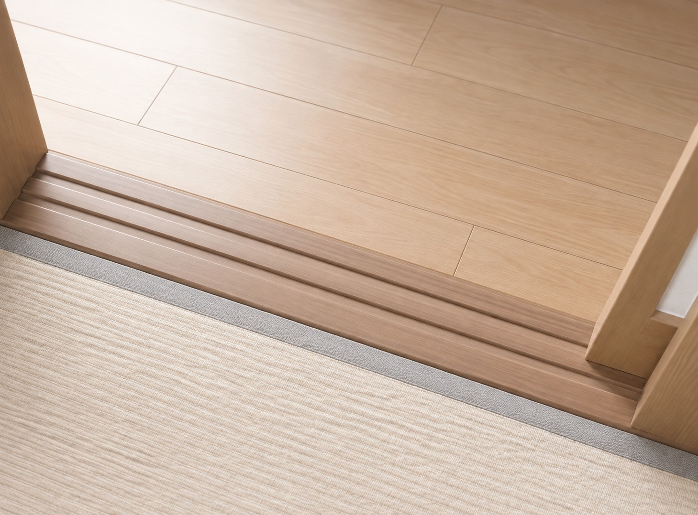
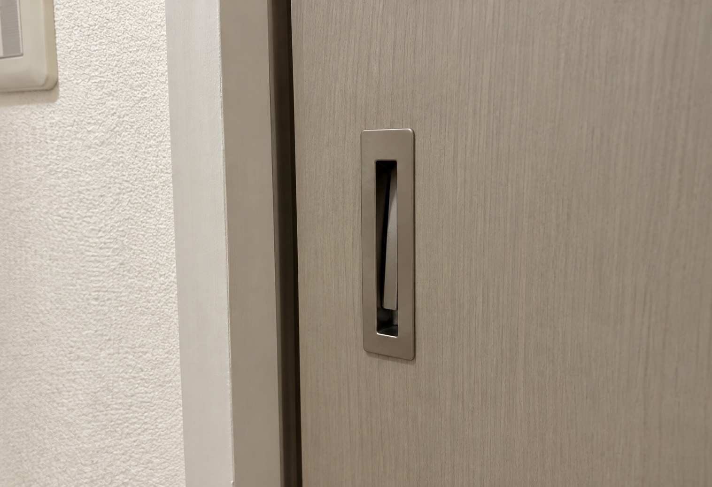
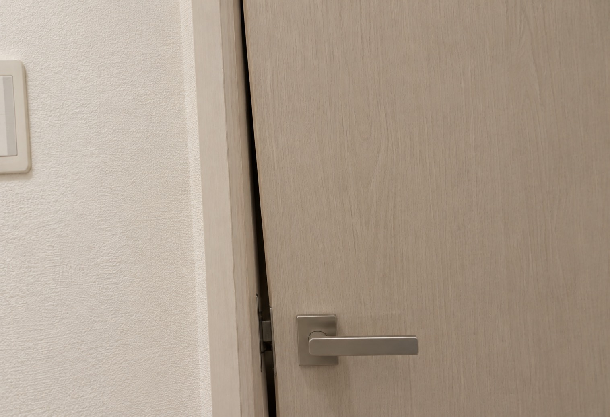
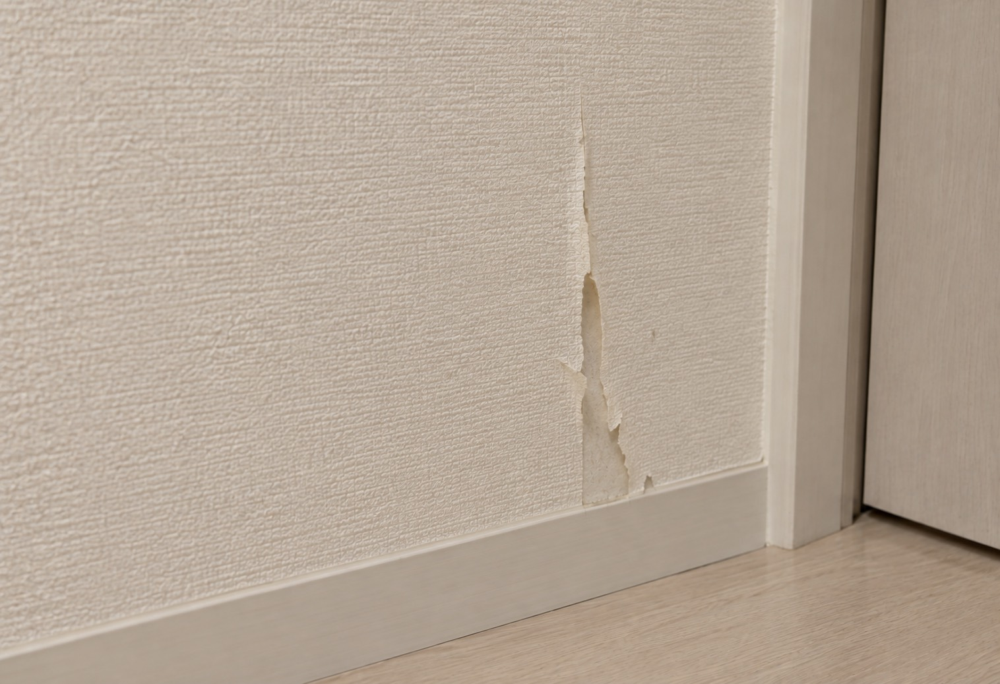
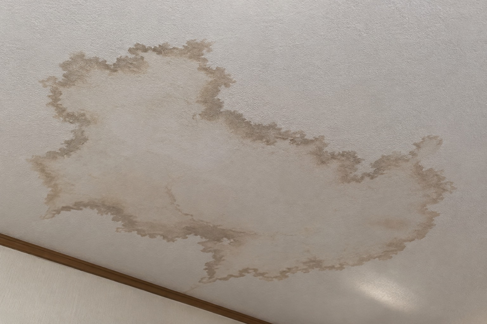
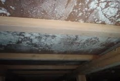
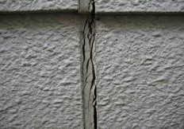

01床・畳の違和感
ふわつきや沈み込みなど、 足元の変化を感じたらご相談ください。
HOME INSPECTION
住まいの小さな変化から、 気になることまで。 まずはお気軽にご相談ください。
CHECK YOUR HOME

01ふわつきや沈み込みなど、 足元の変化を感じたらご相談ください。

02引き戸や建具の動きが重い、 引っかかるなどの症状に。

03開け閉めしにくい、 閉まりきらないといった不具合を確認します。

04はがれや浮き、汚れなど、 内装の気になる箇所を確認します。

05天井や壁などに気になる跡があれば、 早めの確認がおすすめです。
水の出方や止まり方など、 日常の使いづらさもご相談ください。

07湿気が気になる場合は、 床下の状態も確認します。

08気になるひび割れや 壁面の変化について確認します。
点検・調整・お見積もり
費用が発生する場合は、 事前にご案内いたします。
ABOUT INSPECTION
普段の生活では気づきにくい 住まいの変化を確認します。
「これくらいで相談していいの？」 という内容でもお気軽にどうぞ。
状況を確認したうえで、 必要な修繕や対応についてご案内します。